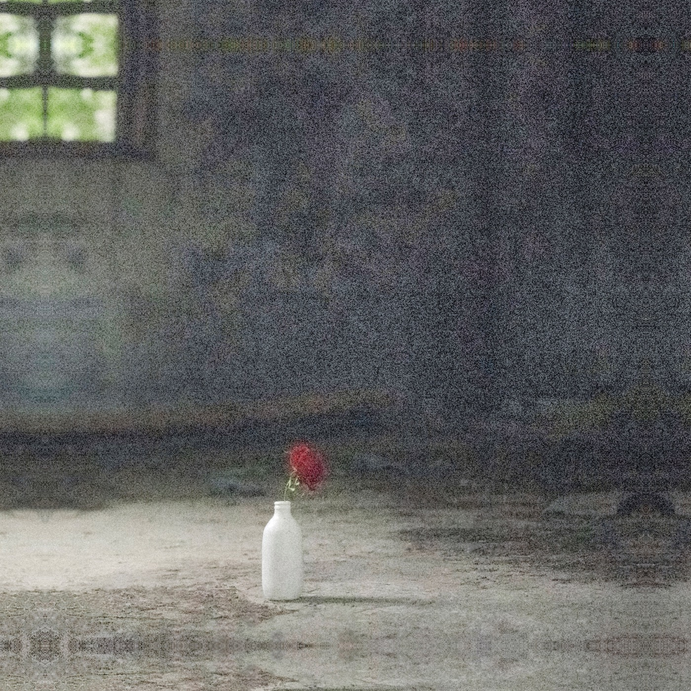

김수연 일곱 번째 개인전EXHIBITION 07
The language of red roses
붉은 장미의
언어.
사라져 가는 것과 태어나는 것,
그 사이에 피어난 이야기.
2026.11.21 — 12.29물빛복합문화센터 2층 물빛 1·2관
↓THE LANGUAGE OF RED ROSES✳KIM SUYEON · 2026
01 — THE INVITATION✳
Dear, you.
우리는 무엇을 남기고,
무엇을 피어낼 것인가.
낡은 벽이 품은 시간과
그 앞에 피어난 한 송이의 생명.
김수연의 일곱 번째 개인전에 초대합니다.
AN INVITATION TO BLOOM
11.21 — 12.29- 전시
- 붉은 장미의 언어
- 작가
- 김수연
- 장소
- 물빛복합문화센터
2층 물빛 1·2관
2026 · 7TH SOLO EXHIBITION
02 — SELECTED WORKS✳
고요한 벽 앞에,
생을 피우다.
A MOMENTIN BLOOM
시간의 흔적 위로 번지는 장미의 빛.
작품을 누르면 더 크게 감상할 수 있습니다.
사라져 가는 것과
태어나는 것.
03 — ARTIST’S NOTE✳
A letter from the artist.
붉은 장미의 언어
낡은 벽은 지나온 시간들을 품었다.
한때 누군가의 든든한 버팀목이었을 콘크리트 덩어리들은 세월이 새긴 깊은 주름과 시간 앞에 갈려나간 굴곡을 안고 묵묵히 서 있다.
따스한 햇빛을 받은 꽃잎이 기지개를 편다. 가장 아름다운 것은 찰나의 순간 뿐이지만, 여린 이파리 하나하나에는 생명력이 가득하다. 그 사실을 모르는 것처럼 아니면 그 사실을 알기에 더욱더...
사라져 가는 것과 태어나는 것.
퇴색하는 것과 생동하는 것이 공존하는 순간을 담았다. 무생물한 벽은 세상의 속도를 따라가지 못해 소멸되고...
붉은 장미는 열정과 존경을 전하며, 모든 이들의 환희를 함께하길 말한다.
연화 김수연
04 — THE EXHIBITION POSTER✳
당신께 보내는 초대장.
05 — PLAN YOUR VISIT↗
2026 하반기 물빛문화공간 기획전시 네 번째장미가 건네는 말,
이곳에서 만나요.
- 전시명
- 붉은 장미의 언어
김수연 일곱 번째 개인전 - 전시 기간
- 2026.11.21 — 12.29
- 전시 장소
- 물빛복합문화센터
2층 물빛 1·2관 - 주소
- 논산시 가야곡면 탑정로 836
관람 시간과 휴관일은 방문 전 전시장에 확인해 주세요.